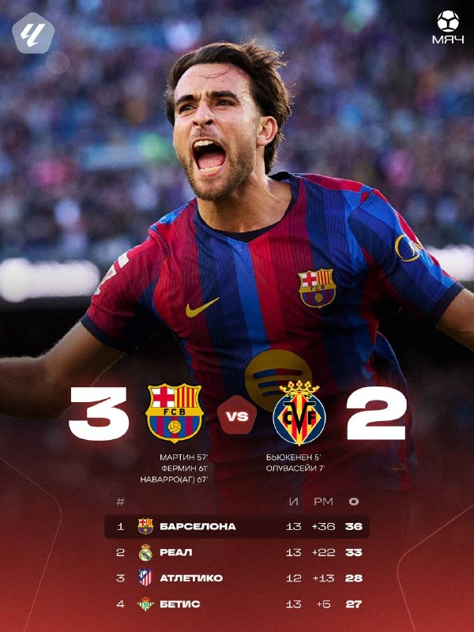
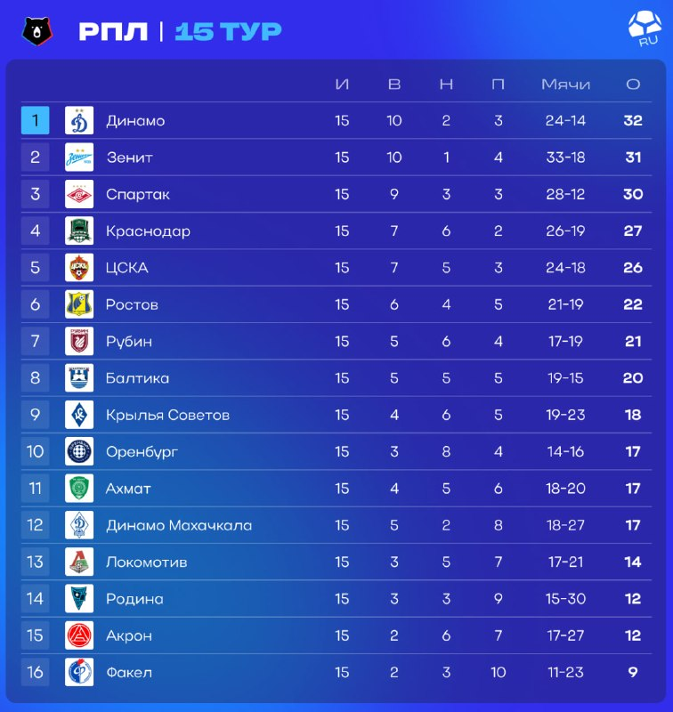
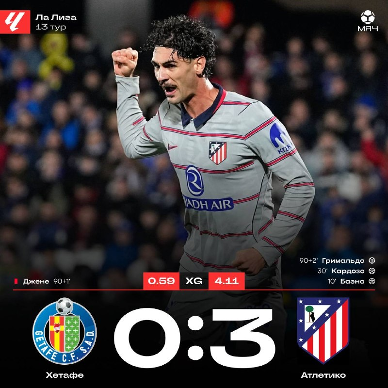
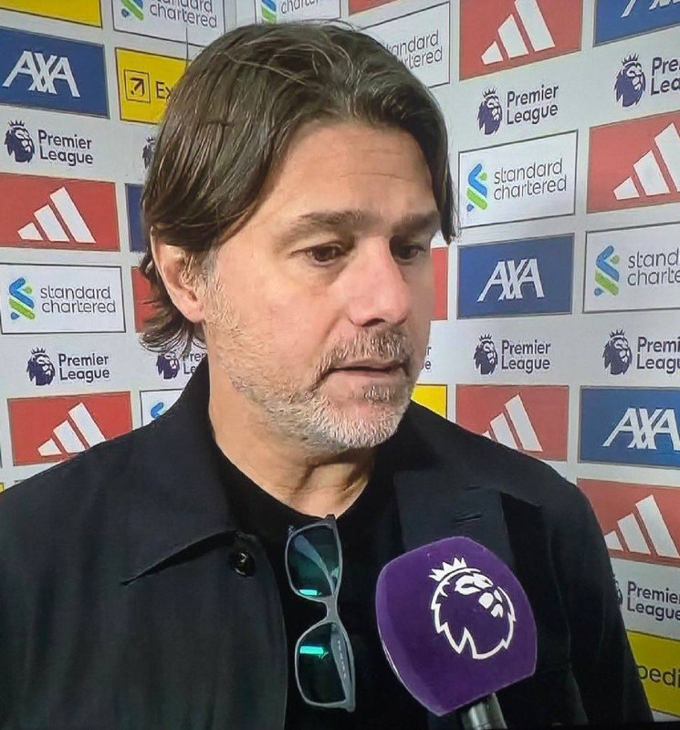

23 ноябряNEW
с 22 по 23 ноября (ТГ-материалы и ESPN собраны 23 ноября в 07:25 МСК — свежие; WebSearch свежих данных почти не дал)
⭐Главное

«Барселона» перевернула игру с «Вильярреалом» (3:2) и опять уехала от «Реала» на три очка. Каталонцы проигрывали 0:2 к 7-й минуте (Бьюкенен 5', Олувасейи 7'), но во втором тайме забили три мяча за 10 минут: Жерар Мартин (57'), Фермин Лопес (61') и автогол Пау Наварро (67'). Это 4-я победа подряд и 51 гол за 13 туров Ла Лиги. Таблица: «Барса» 36, «Реал» 33, «Атлетико» 31. Фермин при этом получил вторую жёлтую, сидя на скамейке, — рискует пропустить игру с «Атлетико» (Мяч PRO).
⚽Результаты

«Зенит» и «Реал» в эти сутки не играли. После 15 туров РПЛ «Зенит» — 2-й с 31 очком, на очко позади лидирующего «Динамо» (32), «Спартак» — 3-й (30). Весь топ-5 потерял очки в туре: «Динамо» — «Краснодар» 1:1, «Динамо» Махачкала — «Спартак» 1:1 (Зобнин 14', Лесовой 89'). «Зенит», дальше: 24 ноября — «Зенит» — «Крылья Советов» (Кубок России, время уточняется); 28 ноября, 16:30 МСК — «ЦСКА» — «Зенит» (РПЛ); 5 декабря, 17:30 — «Зенит» — «Балтика» (по анонсу клуба). «Реал», дальше: 24 ноября, 23:00 МСК — «Реал» — «ПСВ» (ЛЧ); 28 ноября, 23:00 МСК — «Реал» — «Алавес» (Ла Лига).
«Хетафе» — «Атлетико» 0:3 (Баэна 10', Кардозо 30', Гримальдо с пенальти 90+2'). Два ассиста у Хулиана Альвареса — 1+4 в 9 матчах Ла Лиги; у Гримальдо 5-й гол за мадридцев. По xG 4,11 против 0,59. Симеоне стал тренером с наибольшим числом побед в истории Ла Лиги — 345.- Ла Лига / РПЛ: «Расинг» — «Реал Сосьедад» 3:2 (дубль Забири, Каналес с пенальти; у «Сосьедада» Ойярсабаль и Гедеш), «Осасуна» — «Малага» 1:0 (Бумидир), «Локомотив» в первом матче при Овчинникове обыграл «Родину» 1:0 (Мостовой, 8') и поднялся в зону стыков.
👤Мои игроки
- РРоналду: «Аль-Наср» в эти сутки не играл; новых подтверждённых новостей нет. Следующий матч — «Аль-Хазм» — «Аль-Наср», 28 ноября, 15:15 МСК.
- ККуртуа: Моуринью: «Куртуа — лучший вратарь мира, и так уже много лет. Но мне очень нравится и Лунин, он заслуживает играть больше».
- ММбаппе: Моуринью пошутил, что если выпустит в старте Мбаппе и Эспи, то в защитных переходах придётся выбегать на поле самому и останавливать соперника.
- ХХоланд, Беллингем, Сафонов, Батраков, Глушенков, Аршавин: новых подтверждённых новостей в материалах нет. Ближайшие матчи: Батраков — 24 ноября, 20:45 МСК, «Галатасарай» — «Астон Вилла»; Холанд — 24 ноября, 23:00 МСК, «Сити» — «Наполи»; Сафонов — 25 ноября, 23:00 МСК, «ПСЖ» — «Рома».
🔁Трансферы
- Официально Нет новостей.
- Слухи Эксклюзив Фабрицио Романо: «Уотфорд» ведёт продвинутые переговоры с Эдуардом Йорданеску — он главный кандидат на пост тренера вместо уволенного Алессио Дьонизи.
- Слухи Руммениге публично подтвердил, что «Бавария» готова расстаться с Мусиалой из-за обмороков; сам он не представляет, какой клуб захочет купить игрока в такой ситуации.
🩹Травмы
- Бавария Джамал Мусиала снова потерял сознание — на тренировке в понедельник (Bild); ранее дважды это случалось во время матчей в августе. Игрок говорил о неврологической проблеме, которую можно вылечить; точный диагноз не раскрыт.
- ПСЖ Дезире Дуэ — официально: разрыв крестообразной связки, выбыл до следующего сезона. Вечером травмы воры пытались ограбить его дом (Sports.ru).
🔥Ещё важное

«Ливерпуль» разгромил «Манчестер Юнайтед» 4:0 в первом матче Почеттино. Лемми Йоро удалён на 8-й минуте, Собослаи забил со штрафного, затем Вирц (гол и ассист, 10 ключевых передач, 5 созданных моментов), 18-летний Рио Нгумоа (гол и ассист) и Виктор Муньос. «МЮ» — 19-й с 8 очками за 11 туров, одна победа в АПЛ (над «Ипсвичем» 30 августа) и худший показатель обороны топ-5 лиг — 34 пропущенных во всех турнирах. Почеттино: красная карточка была несправедливой, «нам нужно принять реальность и принимать лучшие решения».- «Интер» — «Аталанта» 4:4: Эспозито оформил хет-трик, «Аталанта» отыгралась с 1:3; «Интер» упал на 3-е место (по «Мячу PRO», 32/30/29 очков у топ-3).
- Алькарас обыграл Зверева в финале Итогового турнира ATP — впервые взял титул, шестой за 2026 год; стал самым молодым теннисистом, выигравшим все четыре «Шлема» и Итоговый (к 23 годам).
- «Милан» Аморима разгромил «Фрозиноне» — третья победа подряд, возвращение в топ-4 Серии А.
📅Ближайшие матчи
- 24н«Зенит» — «Крылья Советов»оя, Кубок России; время уточняется
- 24н«Галатасарай» — «Астон Вилла» (Батраков)оя, 20:45 МСК, ЛЧ
- 24н«Реал» — «ПСВ»оя, 23:00 МСК, ЛЧ
- 24н«Манчестер Сити» — «Наполи» (Холанд)оя, 23:00 МСК, ЛЧ
- 24н«Арсенал» — «Боруссия» Дортмундоя, 23:00 МСК, ЛЧ
- 25н«Сабах» — «Барселона»оя, 20:45 МСК, ЛЧ
- 25н«ПСЖ» — «Рома» (Сафонов)оя, 23:00 МСК, ЛЧ
- 25н«Атлетико» — «Викинг»оя, 23:00 МСК, ЛЧ
- 28н«Аль-Хазм» — «Аль-Наср» (Роналду)оя, 15:15 МСК, Саудовская Про-лига
- 28н«ЦСКА» — «Зенит»оя, 16:30 МСК, РПЛ
- 28н«Реал» — «Алавес»оя, 23:00 МСК, Ла Лига
- 29н«Арсенал» — «Манчестер Сити» (Холанд)оя, 19:30 МСК, АПЛ